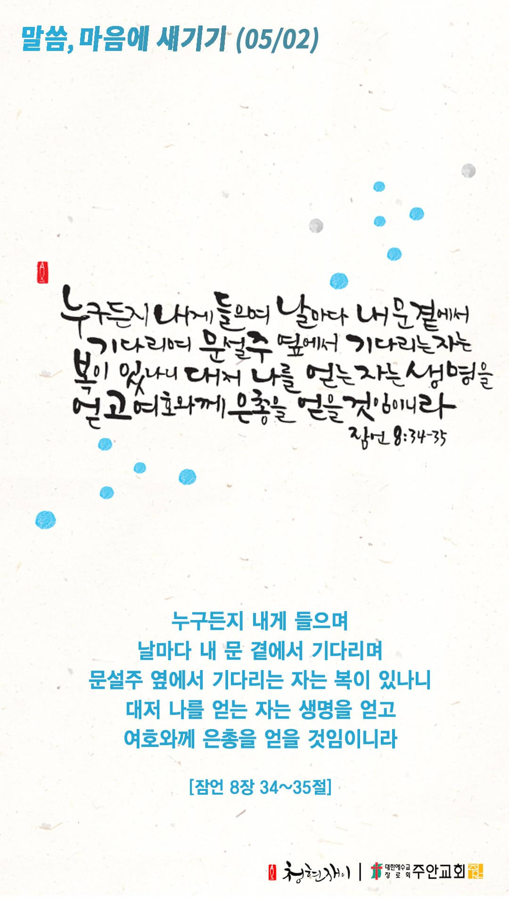

온라인 기도실 안내
2021년 05월02일(일)~05월08일(토)
- 온라인 기도실은 온 회중이 함께 주님 앞으로 나아가는 자리입니다
- 30분 정도 여유를 가지고 하시기 바랍니다
- 말씀과 묵상, 찬양과 기도로 나아갑니다
- 배경 음악이 나올 수 있습니다 볼륨을 조절해주세요
준비가 되셨으면 아래의 버튼을 눌러주세요
할렐루야
내 영혼아 여호와를 찬양하라
시 146:1
- 가사를 묵상하며 읽습니다
하나님은 너를 지키시는자
너의 우편에 그늘 되시니
낮의 해와 밤의 달도
너를 해지 못하리
하나님은 너를 지키시는자
너의 환란을 면케 하시니
그가 너를 지키시리라
너의 출입을 지키시리라
할렐루야
내 영혼아 여호와를 찬양하라
시 146:1
- 가사를 묵상하며 읽습니다
눈을 들어 산을 보아라
너의 도움 어디서오나
천지 지으신 너를
만드신 여호와께로다
할렐루야
내 영혼아 여호와를 찬양하라
시 146:1
하나님은 너를 지키시는자 by 조수아
위의 찬양이 끝나면 말씀읽기를 눌러주시면 됩니다
주의 말씀은 내 발에 등이요
내 길에 빛이니이다 시119:105
오늘의 말씀입니다
음악 소리가 크면 조절하시기 바랍니다

마음의 묵상
잠 8:34-35
“누구든지 내게 들으며 날마다 내 문 곁에서 기다리며 문설주 옆에서 기다리는 자는 복이 있나니 대저 나를 얻는 자는 생명을 얻고 여호와께 은총을 얻을 것임이니라”
1. 위 말씀에서 “나”는 지혜를 가리킵니다. 지혜 얻기를 사모하시나요?
2. 지혜를 얻으려면 어떻게 해야 한다고 말씀하나요?
3. 지혜를 얻은 자는 어떻게 될 것이라고 말씀하나요?
주님, 지혜를 주소서
회개, 삶의 방향을 바꾸는 결정
하나님께서 가장 기뻐하시는 것은 우리의 회개입니다
“내가 너희에게 이르노니 이와 같이 죄인 한 사람이 회개하면 하늘에서는 회개할 것 없는 의인 아흔아홉으로 말미암아 기뻐하는 것보다 더하리라”
- 누가복음 15장 7절 -
3분 정도 회개하며 주님 앞에 나아갑니다
사슴이 시냇물을 찾기에 갈급함 같이
시42:1
- 다음의 말씀을 소리 내어 읽습니다
[마가복음 1장 40-42절]
40 한 나병환자가 예수께 와서 꿇어 엎드려 간구하여 이르되 원하시면 저를 깨끗하게 하실 수 있나이다
41 예수께서 불쌍히 여기사 손을 내밀어 그에게 대시며 이르시되 내가 원하노니 깨끗함을 받으라 하시니
42 곧 나병이 그 사람에게서 떠나가고 깨끗하여진지라
하나님 나라
1. 하나님의 나라가 속히 이 땅에 임하게 하소서
하나님 아버지,
인도의 코로나19 확산세가 멈춰지게 하시고, 그곳에 필요한 의료 지원과 구호 물품들이 속히 전달되게 하소서.
두려움과 슬픔에 빠져 있는 인도 사람들에게 복음이 전파되어, 주님 안에서 참된 소망을 갖게 하소서.
간절한 마음으로 3분 정도 기도합시다
남과 북
2. 남북한이 속히 복음으로 통일되게 하소서
하나님 아버지,
북한의 다음세대들이 외부의 소식과 문화를 자주 접하면서 새로운 시야가 열려 자유 민주주의를 갈망하게 하소서.
북한의 다음세대들이 마음껏 하나님을 찬양하며 기도하며 예배하는 은혜와 자유의 그 날이 속히 오게 하소서.
간절한 마음으로 3분 정도 기도합시다
대한민국
3. 우리나라가 하나님을 경외하는 나라가 되게 하소서
하나님 아버지,
우리나라의 다음세대들이 정직과 정의와 성실로 가득 찬 거룩한 세대가 되게 하소서.
이들을 올바르게 교육할 수 있는 지도자들과 교사들, 그리고 교육 정책들을 세워주시고,
잘못된 문화(거짓, 음란, 중독, 한탕주의, 투기, 동성애)와 이것을 조장하는 정책과 사업들이 무너져 내리게 하소서.
간절한 마음으로 3분 정도 기도합시다
한국교회
4. 한국교회가 성령으로 새롭게 부흥되게 하소서
하나님 아버지,
한국교회의 가정마다 다음세대를 향한 복음의 온전한 계승이 이루어지게 하시고, 다음세대를 마음에 품고 사랑하며
양육하는 교사들이 많아지게 하소서. 이를 통하여 한국교회의 다음세대들이 세상 풍조와 문화를 따르지 않고 복음으로
무장된 하나님의 군사가 되어 새로운 부흥의 역사를 써내려 가게 하소서.
간절한 마음으로 3분 정도 기도합시다
주안교회
5. 주안교회가 다음 세대를 세우는 선교적 교회가 되게 하소서
하나님 아버지,
우리 주안의 자녀들이 하나님을 아는 다음세대가 되게 하소서. 이를 위하여 부모된 우리가 자녀들을 하나님의
말씀으로 잘 양육하고, 우리의 체험신앙을 전수하여 저들이 이 땅에 하나님의 나라를 확장하는데 쓰임받는
귀한 다음세대가 되게 하소서.
간절한 마음으로 3분 정도 기도합시다
감사의 기도
- 오늘 기도를 인도하신 주님께 감사를 올려드립니다
- 아래의 구절을 읽고 주님께 감사의 마음을 올려드립시다
“나의 힘이신 여호와여 내가 주를 사랑하나이다”
- 시편 18장 1절 -
고요한 가운데 잠시 침묵하시기 바랍니다
파송, 세상을 향하여
- 오늘의 온라인 기도를 마쳤습니다
기도를 들으신 주님께서 평안히 가라 하십니다
주님께서 우리와 함께 하시니 두려울 것이 없습니다
새벽을 깨우며
- 새벽기도회 안내입니다